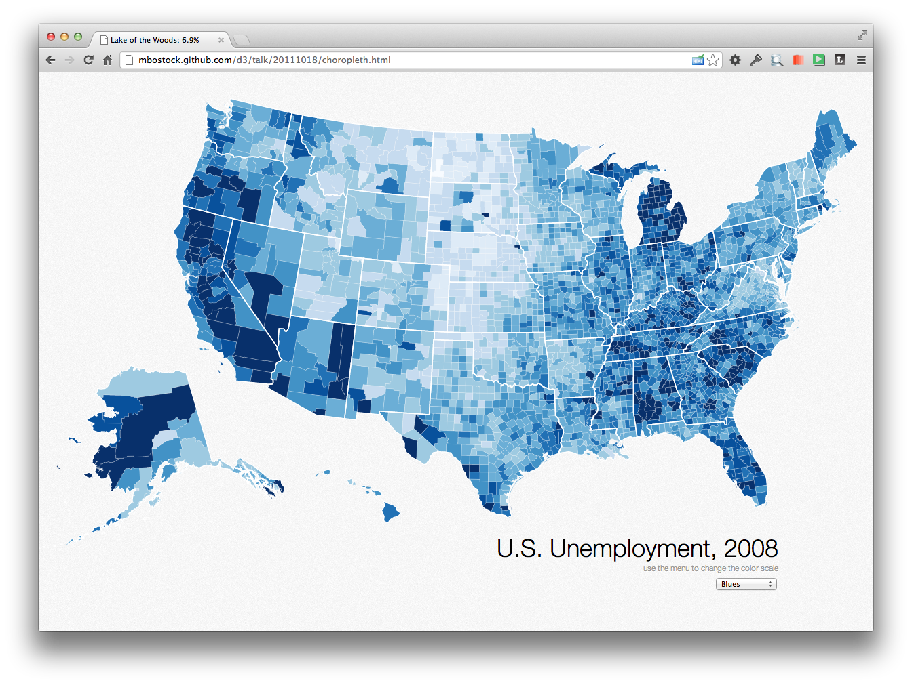
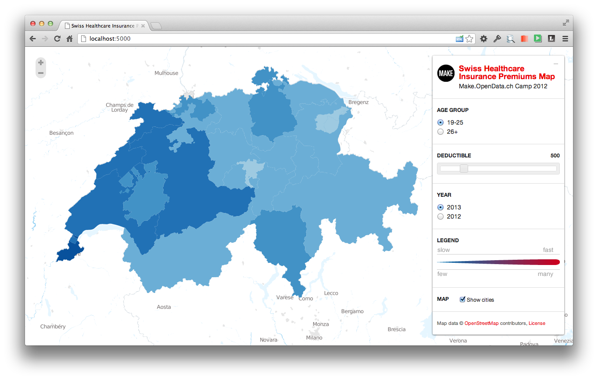
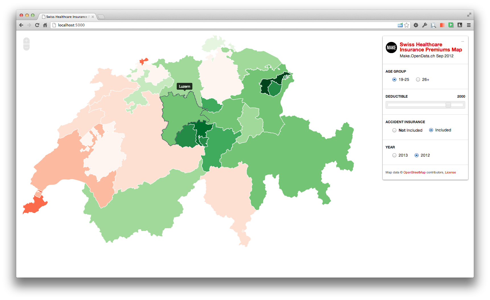

Blog
SCQM-Datenbank am Bechterew-Symposium
PD Dr. med. Adrian Ciurea präsentiert am Bechterew-Symposium vor Betroffenen Forschungsergebnisse der Langzeitstudie Morbus Bechterew («Spondylitis ankylosans»).
Es motiviert uns sehr zu sehen, wie wir mit der Entwicklung und dem Betrieb der Nationalen Online-Datenbank für entzündlich rheumatische Erkrankungen unseren Beitrag für diese Forschung leisten dürfen.
Swiss Clinical Quality Management in Rheumatic Diseases: www.scqm.ch
Schweizerischen Vereinigung Morbus Bechterew: www.bechterew.ch
Sicheres Login mit YubiKey
Was ist ein YubiKey?
Ein YubiKey funktioniert wie eine externe Tastatur und kann einfach per USB an Ihr PC/Mac angeschlossen werden. Der YubiKey funktioniert auf allen Betriebsystemen ohne zusätzliche Software/Treiber-Installation.

Wie funktioniert der YubiKey?
Der YubiKey ist nichts anderes als eine USB-Tastatur. Der Clou: er hat nur einen (goldenen) Kopf und eine Funktionalität. Der YubiKey erzeugt ein OneTime-Token. Das erzeugte Einmalpasswort wird serverseitig validiert und authentifiziert den Benutzer.
Der Login-Prozess
Jedes Mal, wenn der Benutzer den Knopf drückt, wird ein neues OneTime Token erzeugt. Auf dem Login-Formular müssen daher ein persönliches Passwort und das YubiKey Token eingegeben werden. Auf das Eintippen des Benutzernames (eMail- Adresse) kann verzichtet werden, da der YubiKey automatisch eine eindeutige YubiKey ID mitschickt.
Angenehmer Nebeneffekt: andere bekannte Zwei-Faktor-Authenfizierungen machen den Prozess für den Benutzer mühsamer: ich muss z.B. das Token von meinem Handy ablesen und dieses dann in das entsprechende Formularfeld übertragen. YubiKey hingegen erspart dem User Tippen und macht den Login-Prozess bequemer.
Der YubiKey in Ihrer Organisation
Um die Authentifikation für Ihre Webapplikation sicher zu machen, werden alle Ihre Mitarbeiter mit YubiKeys ausgerüstet.
Der Prozess dazu könnte wie folgt aussehen:
- seantis bestellt für Sie die YubiKeys
- Jedem Benutzeraccount wird ein YubiKey zugeordnet
- seantis schickt die YubiKeys per Post an Ihre Mitarbeiter
- Ihre Mitarbeiter können sich sofort mit ihrem persönlichen YubiKey sicher einloggen.
Sie können organisatorisch sicherstellen, dass alle Mitarbeiter ihre YubiKeys sicher in den Büroräumlichkeiten verwahren. So besteht eine erweiterte Kontrolle wer wo und wann Zugriff auf sensible Daten hat.
Persönliche YubiKeys lassen sich mit sofortiger Wirkung entziehen.
Ein YubiKey lässt sich damit bei einer personellen Mutation einfach von einem Benutzer einziehen und an einen anderen weitergeben.
Ein YubiKey verloren
Geht ein Schlüssel verloren oder wird gestohlen, so lässt sich dieser mit sofortiger Wirkung für ungültig erklären (revozieren).
healthinsurance.opendata.ch
Am Swiss Open Data Hackday dieses Wochenende in Basel haben wir innerhalb von nur zwei Tagen eine interaktive Karte mit allen Krankenkassenprämien der Schweiz entwickelt.
Die interaktive Karte ist leider nicht mehr online verfügbar.

Ein Audio-Live-Mitschnitt der Schlusspräsentation ist auch verfügbar (http://infam.antville.org/stories/2137823)

Impressionen von "Open Data"-Enthusiasten beim Hacken: http://www.flickr.com/photos/ph64/sets/72157631649312225

Visualiserung der Krankenkassenprämien
Nachdem wir den Prämiendatensatz vom BAG erhalten haben und diesen mittels einem kleinen Tool (SHIP) in eine Datenbank gebracht haben, sind wir nun dabei die Prämiendaten zu visualisieren. Es ist allgemein bekannt, dass die Prämienunterschiede zwischen einzelnen Kantonen sehr gross sind.

Wir möchten die Daten auf einer interaktiven Karte darzustellen, so dass sich regionale Unterschiede einfach erkennen lassen. Für die Karte sollen sich dann dynamische Filter setzen lassen. Interessant könnten hier gewisse "Kovariablen" wie Ärzte- oder Spitaldichte sein. Auch die Entwicklung über Zeit ist sicherlich nicht uninteressant.

Für die interaktive Karten-App bauen wir auf die Applikation "Swiss Train Flows", welche am letzten Swiss Open Data Hackday in Zürich entstanden ist.
Im Team "SHIP" Swiss Open Data Hackday:
- Denis Krienbühl (https://github.com/href)
- Colin Frei (https://github.com/colinfrei)
- Patrick Staehlin (https://github.com/packi)
- Oliver Egger (https://github.com/oliveregger)
- Fabian Reinhard (https://github.com/freinhard)
Last but not least das GitHub Repository: https://github.com/seantis/ship
#
Stand der Arbeiten
Update FR 28.09.2012 17:30: Kantonsgrenzen auf die Karte zeichnen mit GeoJSON

Update FR 28.09.2012 18:48: Wir werden definitiv ein schönes Farbschema brauchen! Hier ein verdammt schönes Beispiel von http://mbostock.github.com/d3/talk/20111018/choropleth.html

Update FR 28.09.2012 19:24: Ich habe gerade die kleine Python Webapp auf meinem Notebook installiert:
- Die Karte wird geladen
- Die Kantonsgrenzen sehr ordentlich eingezeichnet!

Update FR 28.09.2012 19:46: Wir haben erste Farben! Wow!!

Update FR 28.09.2012 21:02: Wie visualisieren wir die Ärztedichte pro Kanton?

Update SA 29.09.2012 10:15: Tag zwei der Hackdays. Wir haben nun neue Farben mit mehr Bedeutung: rot = über den CH-Durchschnitt / grün = unter dem CH- Durchschnit

Die ärztliche Handschrift und Dokumentationsfehler
Eine Studie über den Verschreibungsprozess auf einer Station des Universitätsspitals Bern kam zum Schluss, dass Verschreibungsfehler wegen fehlender oder zweideutiger Angaben des Arztes häufig sind [http://www.nzz.ch/aktuell/schweiz/die-handschrift-der-halbgoetter-in- weiss-1.12848707].
Unter folgenden Bedingungen sind Fehler bei der Medikamentenabgabe wahrscheinlicher:
- die Schrift der Verschreibung ist unleserlich
- die Angaben des Arztes sind unvollständig (es fehlen z.B. Informationen zur Dosis eines Medikaments)
- die Verschreibung enthält widersprüchliche Angaben
Aus diesen Gründen empfiehlt es sich, handschriftliche Dokumentationsprozesse durch elektronische Systeme zu ersetzen.
Mit OCQMS entwickeln wir eine modulare webbasierte Software für ein "Clinical Quality Management System". Das System unterstützt den praktizierenden Arzt in seiner täglichen klinischen Arbeit (automatische Generierung von ärztlichen Berichten) und stellt dabei eine strukturierte Ablage der Daten sicher.

Dabei werden nicht nur medikamentöse Verschreibungen, sondern der gesamte Dokumentationsprozess in einem wohlstruktutrierten elektronischen System abgebildet.
OCQMS legt zudem grossen Wert auf eine geeignete Visualisierung der Daten, so dass sich Fehler oder Inkonsistenzen (z.B. bei der Medikation) leichter erkennen lassen.

Die erfassten Daten werden dank Report Generator als Textbausteine bzw. tabellarische Darstellung in den ärztlichen Bericht (Arztbrief) übertragen.
Gefährliche Fehler aufgrund einer unleserlichen Handschrift können so komplett vermieden werden.